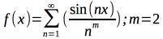

Perhaps as an actual blog post, I will talk of some things in my life. Oh, and also some rant in the mix.
I have finally received the pochette that I have won in a random contest by the instagram account “Violin Torture” (Instagram handle: @violintorture). For context, a pochette is like a violin, just without the large hollow body; it does have a hollow section, but it is not as large and therefore does not resonate as much as a violin would. It has been in my possession for the past day, sitting in my garage as my father and I are concerned over the potential for the box to carry the Covid-19 virus. I hope to open it tomorrow afternoon, and then buy a violin bow perhaps on Saturday at the Winter Haven Carlton Music. When I do open up the instrument, I will post some pictures here so that y’all can see.
On the current state of my academic things, I do not have too much work assigned as of now. I expect that we will receive much more in the second semester.
I am thinking of buying some things for my Raspberry Pi(s), like a little programmable Christmas tree which would be attached to the GPIO pins, with LEDs that could be programmed. Either that or a little barometer, thermometer bundle which would be interesting to have and mess around with. I’m not sure of what to buy yet but I expect to buy both haha.
I actually would really like to open the box of the pochette; I am just really excited to mess around with it. On a side note, I have decided to give a name to the pochette, code name “The Breadstick”. Most flattering isn’t it?
I am actually really proud of myself in the informal discussion we had in philosophy class today, as I really feel that I was able to talk clearly about some of the many things that have previously passed though my mind, such as how we (myself and my fellow philosophy students) are to spread the methods of thinking and logic to those who have not studied philosophy, bringing in connections to Plato’s allegory of the cave in that we as the enlightened must become the enlightening, and pull our non-enlightened fellows into our complex thought. I didn’t mention it, but I was also considering William Godwin, in that the purpose of education is to open/enlighten the minds of students, which current education systems fail to do.
I did better today on my one-hour, afternoon, power walk, of which today I was able to cover 3.69 miles at an average pace of 17 minutes and 4 seconds per mile, compared to yesterday’s 3.39 miles at the average pace of 17 minutes and 41 seconds per mile. For context, I use an apple watch to monitor my statistics during exercise. It is also recorded that I lost 584 calories in today’s walk, and 549 calories in yesterday’s. I feel very proud about myself here :)
One of my peers in philosophy class today essentially asked how we would convince someone of a form of thinking more philosophically aligned; how we would convince someone to change their mind, or perhaps analyze their own form of thinking. My response was centered in the example of how our Philosophy teacher, Dr. Benjamin Graffam, has taught us philosophy in the past few months; feeding us bits and pieces of information as to get us to think philosophically and to get us to be able to question things by ourselves. Thats how I think most teaching should be, teaching us small bits, attempting to get the student to be hooked onto them, which is what my school experience has seemed to do.
Oh, and a good song to listen to is Yvette Young’s “Jolt”
Careful, that hyperlink is gonna pull you out of this website :p
Another fun song is *insert title here*.
I’ve stumbled upon an old desmos graph with this really nice equation

It just looked really nice when I was messing around with graphs, so I saved it.
Oh and does this bring you back to the foyer?